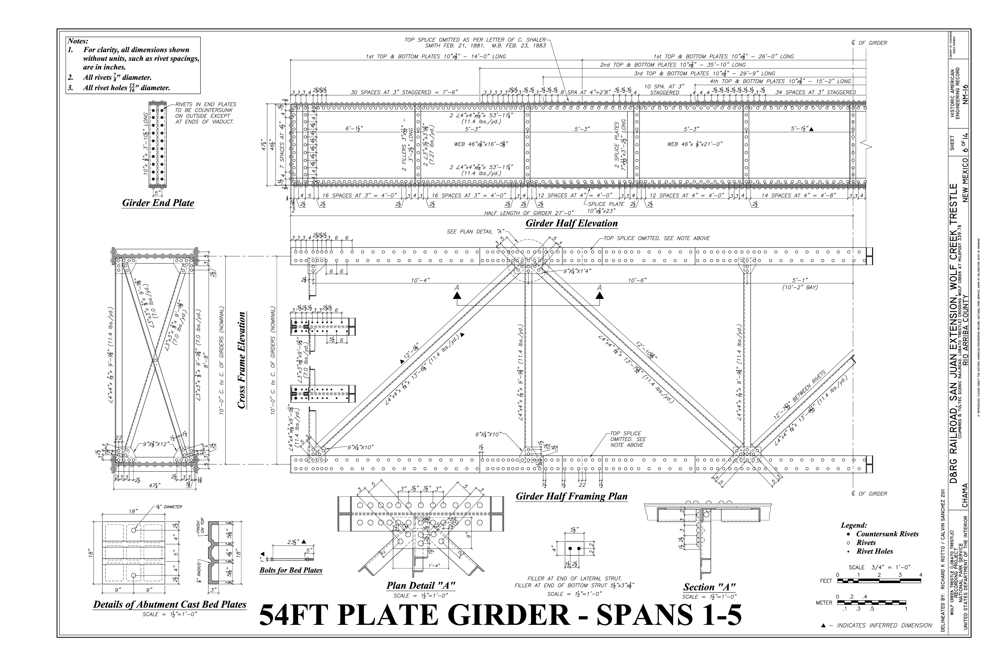

DRAWING QUALITY01

Drawing→Review→Evaluate
HAER NM-16, sheet 6 · NPS / Library of Congress ↗
Engineering / Quality assurance
Technical drawings.
Clearer quality checks.
Developing software for checking technical drawings, with tools to inspect findings and compare analysis results.
The review interface brings original and modified drawings, error records, and evaluation measures into one place.
Inside the work
The problem. Reviewers need to understand what was found and how results change between analyses.
The implementation. A drawing viewer paired with error-level inspection, precision and recall summaries, and checks for inconsistencies in evaluation records.
The focus. Make results traceable and easier to assess, including missed errors and extra findings.